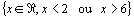
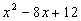
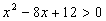
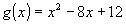
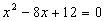
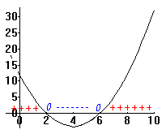
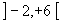
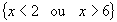

Item 04: O domínio da função real  é
é

.Para que f(x) seja uma função teremos que retirar do conjunto de partida(Â
) os valores de x que anulam o denominador, ou seja, descobrir quando ocorre , para isto basta analisarmos quando  ; além disto, expressão
; além disto, expressão

encontra-se sob uma raiz quadrada, isto quer dizer que ela não pode assumir valores negativos. Resumidamente, teremos que determinar onde
(estudo do sinal de uma função do segundo grau.).
Estudemos quais os valores de x que tornam  :
:
O gráfico da função

tem concavidade voltada para cima, pois o coeficiente do termo em segundo grau é maior que zero, além disto, o gráfico corta o eixo das abcissas em 2 e 6, pontos em que
(clique aqui para ver o cálculo).
 | Observamos no gráfico que a função tem sinal negativo para valores no intervalo  e imagens nulas para as abcissas 2 e 6. |
Conclusão: O domínio de f(x) é o conjunto

.
 Voltar
Voltar